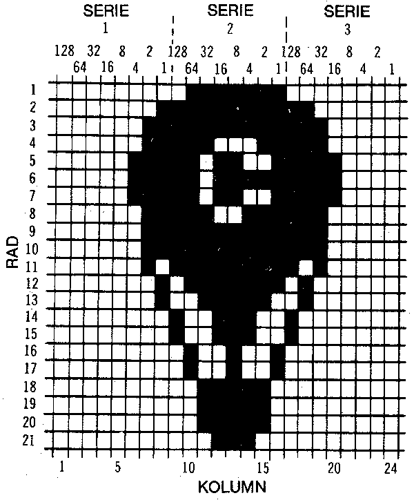

När vi i tidigare kapitel utnyttjade grafik såg vi att grafiska symboler kunde användas i PRINT-kommandon för att animera och göra bildliknande figurer på skärmen.
Ett sätt var också att använda POKE-kommandot för att placera ett tecken i en bestämd minnesposition.
Att skapa bilder på dessa sätt krävde en stor arbetsinsats eftersom föremålen måste skapas från existerande grafiska symboler. Förflyttning av figurer till en ny position krävde en mängd programsteg. Dessutom, beroende på begränsningen att använda existerande grafiska symboler, blev formen och detaljrikedomen hos figur rama inte alltid så bra som önskat. Användning av sprites i bildavsnitt eliminerar en stor del av dessa
problem. En sprits är ett i högupplösning programmerat objekt Figur) som kan göras i önskad form--genom BASIC kommandon. Figuren kan lätt flyttas runt på skärmen genom att enkelt tala om för datorn den position dit den ska flyttas. Datorn tar hand om resten.
Sprites kan mycket mer. Deras färger kan ändras; du kan få information om de kolliderar med varandra; de kan programmeras att gå framför och bakom varandra; och de kan lätt fås att ändra storlek. Detta till att börja med! Nackdelarna med allt detta är minimala. Emellertid kräver användande av sprites viss kännedom om hur Commodore 64 arbetar och hur tal behandlas inuti datorn. Det är emellertid inte så komplicerat som det låter. Följ bara exemplen och du kommer ganska snart att få dina egna sprites att Göra fantastiska saker åt dia.
Sprites kontrolleras av en speciell bildgenerator i Commodore 64. Denna bildgenerator sköter om vad som visas på skärmen. Den tar hand om allt arbete som fordras för att skapa och hålla ordning på tecken och grafik, skapar färger och flyttar runt figurerna.
Denna bildgeneratorkrets har 46 olika TILL/FRÅN positioner vilka fungerar på liknande sätt som invändiga minnespositioner. Vardera av dessa positioner består av 8 celler. Varje cell kan vara TILL eller FRÅN. Vi kommer att behandla detta mer noggrant senare. Genom att med POKE-kommandot lägga in ett lämpligt decimalvärde i en minnesplats kan du kontrollera formen och rörelsen för din sprite-figur.
Utöver att vi använder många av bildgeneratorns minnespositioner kommer vi att använda en del av Commodore 64's huvudminne för att lagra information (data) som definierar sprites. Dessutom finns det 8 minnespositioner direkt efter skärmminnet som talar om för datorn var den ska hämta data för respektive sprits.
Eftersom vi går igenom några exempel, blir programmeringen ganska okomplicerad och du kommer att förstå hur det går till.
Låt oss nu börja med att skapa lite sprite-grafik. En spritefigur är 24 punkter bred och 21 punkter hög. Upp till 8 sprites kan hanteras samtidigt. Sprites visas på skärmen i ett speciellt högupplösningsläge vilken ändrar skärmen till ett 320 punkter brett och 200 punkter högt område.
Tänk dig att du vill skapa en ballong och få den att sväva runt på skärmen. Ballongen kan konstrueras i ett rutnät bestående av 24 gånger 21 celler (se nedan).

Nästa steg är att omvandla bilden till data som Commodore 64 kan använda. Tag ett anteckningsblock eller ett rutat papper och rita upp ett rutnät som är 21 rutor högt och 24 rutor brett. I överkanten skriver du 128,64,32,16,8,4,2,1, tre gånger (som bilden visar), över samtliga 24 rutor. Numrera vänstersidan med siffrorna 1--21 för varje rad. Skriv ordet DATA över slutet på raderna. Nu kan du fylla i rutmönstret med någon figur eller använd ballongen som vi har. Det är lättast att rita formen först och sedan gå tillbaka och fylla i rutorna.Om du nu tänker på de rutor du fyller i som "TILL" så ersätt varje fylld ruta med en etta. För de som inte är fyllda, de är "FRÅN", skriv en nolla.
Med början på första raden måste du omvandla punkterna i tre separata sektioner av data som datorn kan förstå. Varje sektion om 8 rutor motsvarar en mängd data som kallas en BYTE. Med början från vänster på övre raden är de första 8 rutorna blanka eller nollor, så värdet för den serien av tal är noll.
Den mellersta serien ser så här ut (fortfarande motsvarar 1 en fylld ruta, 0 en tom ruta).
128 64 32 16 8 4 2 1 <--värde
+-----+-----+-----+-----+-----+-----+-----+-----+
| 0 | 1 | 1 | 1 | 1 | 1 | 1 | 1 | <--"ställning"
+-----+-----+-----+-----+-----+-----+-----+-----+
^ ^ ^ ^ ^ ^ ^ ^ +--beräkning
| | | | | | | | v
0 + 64 + 32 + 16 + 8 + 4 + 2 + 1 = 127
Den tredje serien på första raden innehåller endast blanka rutor så det motsvarar noll. Därför blir data för första raden:
DATA 0,127,0
Serien för andra raden beräknas på följande sätt:
+-----+-----+-----+-----+-----+-----+-----+-----+
Serie 1: | 0 | 0 | 0 | 0 | 0 | 0 | 0 | 1 |
+-----+-----+-----+-----+-----+-----+-----+-----+
1 = 1
+-----+-----+-----+-----+-----+-----+-----+-----+
Serie 2: | 1 | 1 | 1 | 1 | 1 | 1 | 1 | 1 |
+-----+-----+-----+-----+-----+-----+-----+-----+
^ ^ ^ ^ ^ ^ ^ ^
| | | | | | | |
128 + 64 + 32 + 16 + 8 + 4 + 2 + 1 = 255
+-----+-----+-----+-----+-----+-----+-----+-----+
Serie 3: | 1 | 1 | 0 | 0 | 0 | 0 | 0 | 0 |
+-----+-----+-----+-----+-----+-----+-----+-----+
^ ^
| |
128 + 64 = 192
För rad 2 blir data följande:
DATA 1,255,192
På samma sätt förfares med de tre serierna av data på vardera av de återstående raderna. De omvandlas till dess decimalvärde. Tag dig tid att göra de återstående raderna i vårt exempel.
Nu när du har data för ditt objekt, hur kan du få ut något av det? Skriv följande program och se vad som händer.
1 REM BALLONG-FLYGNING
5 PRINT"{clear}"
10 V=53248:REM START DISPLAY CHIP
11 POKEV+21,4:REM START SPRITE 2
12 POKE 2042,13: REM SPRITE DATA FRÅN BLOCK 13
20 FOR N = 0 TO 62:READ Q:POKE 832+N,Q:NEXT
30 FOR X = 0 TO 200
40 POKE V+4,X:REM UPPDATERAR X KOORDINATEN
50 POKE V+5,X:REM UPPDATERAR Y KOORDINATEN
60 NEXT X
70 GOTO 30
200 DATA 0,127,0,1,255,192,3,255,224,3,231,224
210 DATA 7,217,240,7,223,240,7,217,240,3,231,224
220 DATA 3,255,224,3,255,224,2,255,160,1,127,64
230 DATA 1,62,64,0,156,128,0,156,128,0,73,0,0,73,0
240 DATA 0,62,0,0,62,0,0,62,0,0,28,0
(Hämta)
* för mer info om READ och DATA se kapitel 8
Om du skrivit allt korrekt, flyger din ballong sakta över skärmen:.
För att du ska förstå vad som hände, behöver du först veta vilka minnespositioner som behövs för bildgeneratorn. Dessa positioner, kallade register, beskrivs nedan:
| Register | Beskrivning |
|---|---|
| 0 | X-koordinat för sprite 0 |
| 1 | Y-koordinat för sprite 0 |
| 2-15 | Par som 0 och 1 för sprites 1-7 |
| 16 | Mest signifikanta biten -- X-koordinat |
| 21 | Sprite synlig: 1=synlig, 0=osynlig |
| 29 | Expandera sprite i "X"-riktningen |
| 23 | Expandera sprite i "Y"-riktningen |
| 39-46 | Sprite 0 till 7 färgval |
Utöver denna information behöver du veta från vilken 64 bytes minnessektion varje serie av 8 minnesceller innehållande data för sprites ska hämtas (serie 1 används inte).
Dessa data tas om hand av 8 positioner direkt efter skärmminnet:
+------+------+------+------+------+------+------+------+
| 2040 | 2041 | 2042 | 2043 | 2044 | 2045 | 2046 | 2047 |
+------+------+------+------+------+------+------+------+
^ ^ ^ ^ ^ ^ ^ ^
| | | | | | | |
SPRITE 0 1 2 3 4 5 6 7
Låt oss nu beskriva den exakta proceduren för att komma igång och slutligen skriva ett program.
Det krävs endast ett fåtal steg för att skapa och flytta runt ett objekt (en sprite).
På rad 10;
V = 53248
sätter V till starten på videokretsens minnesadresser. På detta sätt ökar vi enbart V med registernumret så får vi den verkliga minnesadressen. Registernumren är de som gavs i registertabellen ovan.
På rad 11;
POKE V + 21,4
gör sprite 2 synlig genom att placera värdet 4 i vad som kallas enable-register (21). Se det på följande sätt:
SPRITES
Decimalvärde för varje spritenummer
128 64 32 16 8 4 2 1
Spritenummer
7 6 5 4 3 2 1 0
+-------+-------+-------+-------+-------+-------+-------+-------+
21 | 0 | 0 | 0 | 0 | 0 | 1 | 0 | 0 | = 4
+-------+-------+-------+-------+-------+-------+-------+-------+
^
|
Sätt en etta för den sprite(s) du önskar
Varje sprite representeras i register 21 av spriteminnet och 4 motsvarar där sprite nummer 2.
Om du skulle använda sprite nummer 3 borde du sätta en 1 i minnescellen för sprite 3 vilket görs med värdet 8. Om du samtidigt vill använda sprites 2 och 3 måste du sätta en etta i cellen för respektive sprites. Värdet som ska läggas in i registret blir då 4 + 8 = 12. Du lägger alltså samman decimalvärdena på samma satt som du gjorde med DATA på det rutade papperet tidigare. Starta sprites 2 och 3 kan alltså skrivas V+21,12.
På rad 12;
POKE 2042,13
instruerar datorn att hämta data till sprite 2 (position 2042) från minnesområde 13. Som du minns från det du gjorde dina sprites, behövs det 63 bytes (minnessektioner) för att lagra dess data. Du kanske inte lade märke till det men de siffror du skrev över rutmonstret motsvarar 3 byte (ord) för datorn. Med andra ord; vardera samling av följande tal, 128,64,32,16,8,4,2,1 motsvarar 1 byte av datorns minne.
Med 21 rader med 3 bytes vardera behöver varje sprite 63 bytes.
20 FOR N = 0 TO 62 : READ Q : POKE 832+N, Q : NEXT
^ ^
| |
+---------------+------- 1 byte
Denna rad tar hand om data på din sprite. De 63 bytes med data som representerade den sprite du skapade läses nu in i det trettonde minnesblocket. Detta startar på adress 832.
30 FOR X = 0 TO 200 40 POKE V+4, X <---- Sprite 2'S X-koordinat 50 POKE V+5, X <---- Sprite 2's Y-koordinat
Som du kommer ihåg från skolan så representerar X-koordinaten ett objekts horisontella rörelse över skärmen och Y-koordinaten representerar spritens vertikala rörelse på skärmen. Då värdet på X förändras på rad 30 från 0 till 300 (en siffra i taget) flyttar sig spriten nedåt mot häger ett steg för varje siffra. Siffrorna läses av datorn tillräckligt snabbt för att uppfattas som en kontinuerlig rörelse, istället för ett steg i taget. Om du behöver fler detaljer kan du se efter på registerkartan i bilaga O.
När det handlar om att samtidigt flytta ett flertal objekt, skulle det vara omöjligt för en minnessektion att uppdatera positionerna för alla 8 objekten. Därför har varje sprite sin egen uppsättning av 2 bytes för att styra objekten över skärmen.
Rad 70 startar om programmet efter objektet passerat skärmen en gång. Det återstående av programmet är data för ballongen. Det ser verkligen annorlunda ut på skärmen eller hur?
Prova nu att lägga till följande rad:
25 POKE V + 23,4: POKE V + 29,4: REM EXPANDERAoch kör programmet igen. Ballongen har expanderat till dubbel storlek! Vad vi gjorde var enkelt. Genom att POKEa 4 (för att indikera sprite 2) i registren 23 och 29 expanderades sprite 2 i X och Y-led.
Det är viktigt att lägga märke till att objektet startar i övre vänstra hörnet. När ett objekt expanderas i endera riktningen förblir startpunkten densamma.
För ytterligare prov lägg till följande rader:
11 POKE V+21,12 12 POKE 2042,13: POKE 2043,13 30 FOR X = 1 TO 190 45 POKE V + 6,X 55 POKE V + 7,190-X
En andra sprite (nummer tre) har nu startats genom att vi POKEat 12 i den minnesposition som ger objekt synliga (V+21).12 startar sprites 3 och 2 (00001100 = 12).
De nya raderna 45 och 55 flyttar kring sprite 3 genom att POKEa värden i sprite 3's register för X- och Y-koordinater (V + 6 och V + 7).
Vill du fylla himlen med ännu mer? Lägg då till följande:
11 POKE V+21, 28 <-- 28 är i verkligheten 4(sprite 2) + 8(sprite 3) +
16 (sprite 4)
12 POKE 2042, 13 : POKE 2043, 13 : POKE 2044, 13
25 POKE V+23, 12 : POKE V+29, 12
48 POKE V+8, X
58 POKE V+9, 100
på rad 11 görs denna gång ytterligare en sprite (4) synlig genom att vi
POKEar 28 in i enable registret. Nu är sprites 2,3 och 4 till (00011100 =
28).
Rad 12 indikerar att sprite 4 ska hämta sina data från samma minnesområde (den 13de 63 bytessektionen) som de andra objekten. Detta sker genom POKE 2044,13
På rad 25 expanderas sprite 2 och 3 genom att POKEa 12 (sprite 2 och 3) i X och Y minnena för expansionsriktningen (V + 23 och V + 29).
Rad 48 flyttar sprite 3 längs X-axeln. Rad 58 placerar sprite 3 halvvägs ned på skärmen, till plats 100. Eftersom detta värde inte ändras, som det gjorde tidigare med X = 1 TO 200 flyttar sig sprite 3 enbart horisontellt.
Nu när du experimenterat med sprites kan ytterligare information lämnas. Du kan ändra objektens färg till vilken som helst av de tillgängliga 16 standardfärgerna. Detta sker med hjälp av de färgkoder (0 till 15) som vi använde för att ändra teckenfärg tidigare. Dessa kan du hitta i kapitel 5 eller bilaga G.
Om du exempelvis vill ändra sprite 1 till ljusgrön, skriv: POKE V + 40, 13 (kom ihåg att sätta V = 53248).
Du kanske lade märke till när du körde programexemplet för sprites att objekten aldrig flyttades till den högra kanten på skärmen. Detta berodde på att skärmen är 320 punkter bred och X-riktningsregistret kan endast lagra värden upp till 255. Hur kan man då få objekt att röra sig över hela skammen? Det finns en plats i minneskartan som inte omnämnts ännu. Register 16 (i minneskartan) kontrollerar något som kallas den mest signifikanta biten (MSB) för sprites X-koordinat. Detta ger dig möjlighet att flytta till en horisontell punkt mellan 256 och 320.
Den mest signifikanta biten (MSB) i X registret fungerar enligt följande: det att objektet har flyttats till X positionen 255, placeras ett värde i register 16 som representerar den sprite du vill flytta. Om du exempelvis vill flytta sprite 2 till en X-position mellan 255 och 1 320. POKEa värdet för sprite 2, vilket är 4, in i register 16.
POKE V + 16,4
Nu kan du börja förflyttningen i det vanliga registret för X-riktningen för sprite 2 (vilket är register 4) med början på 1 igen. Eftersom du endast ska flytta ytterligare 64 steg, kommer X-värdet endast att variera mellan 0 och 63 denna gång.
Hela denna idé beskrivs bäst med en version av originalprogrammet:
10 V = 53248 : POKE V+21, 4 : POKE 2042, 13 20 FOR N = 0 TO 62 : READ Q : POKE 832+N, Q : NEXT 25 POKE V+5, 100 30 FOR X = 0 TO 255 40 POKE V+4, X 50 NEXT 60 POKE V+16, 4 70 FOR X = 0 TO 63 80 POKE V+4, X 90 NEXT 100 POKE V+16, 0 110 GOTO 30
Rad 60 sätter MSB för sprite 2. Rad 70 börjar på nytt ändra i det vanliga X-riktningsregistret, vilket gör att objektet flyttas den återstående vägen över skärmen.
Rad 100 är viktig eftersom den stänger av den mest signifikanta biten så att objektet kan starta från skärmens vänsterkant på nytt.
För att definiera flera sprites, kan du behöva ytterligare block för sprite data. Du kan använda en del av BASIC RAM genom att flytta BASIC. Innan du skriver eller läser in ditt program skriv:
POKE 44,16:POKE16*256,0:NEW
Nu kan du använda block 32 till 41 (adress 2048 till 4095) för lagring av spritedata.
Det är utanför avsikten med denna bruksanvisning att i detalj beskriva hur datorn behandlar tal. Vi kommer emellertid att ge dig en tillräcklig introduktion för att förstå hur det går till och för att ge dig möjlighet att gå vidare med kvalificerad animering.
Men innan dess måste vi definiera några termer:
BIT--Detta är den minsta mängd information en dator kan lagra. Jämför en BIT med en omkopplare som är antingen "TILL" eller "FRÅN". När en BIT är "TILL" har den värdet 1; när den är "FRÅN" har den värdet 0.
Efter BIT är nästa storhet BYTE.
BYTE--Detta definieras som en följd av BITar. Då en BYTE är uppbyggd av 8 BITar, kan du i verkligheten ha totalt 256 olika kombinationer av BITar. Med andra ord, du kan ha alla BlTar "från" och då ser din BYTE ut så här:
128 64 32 16 8 4 2 1
+-------+-------+-------+-------+-------+-------+-------+-------+
| 0 | 0 | 0 | 0 | 0 | 0 | 0 | 0 |
+-------+-------+-------+-------+-------+-------+-------+-------+
och dess värde är 0. Alla BIT's "till" är:
128 64 32 16 8 4 2 1
+-------+-------+-------+-------+-------+-------+-------+-------+
| 1 | 1 | 1 | 1 | 1 | 1 | 1 | 1 |
+-------+-------+-------+-------+-------+-------+-------+-------+
vilket är 128 + 64 + 32 + 16 + 8 + 4 + 2 + 1 = 255.
Nästa storhet kallas REGISTER.
REGISTER--Definieras som en samling av sammanhängande BYTES. Men i detta fall är varje REGISTER endast 1 BYTE långt. En serie av REGISTER bildar en REGISTERKARTA. REGISTERKARTOR är kartor av den typ du använde när du gjorde din ballong. Varje REGISTER kontrollerar olika funktioner. Det som används att göra sprites synliga kallas enable (tillgänglig)-REGISTER. För att göra ett objekt större i höjdled används EXPAND X REGISTER, och för att objekten bredare används EXPAND Y REGISTER. Kom ihåg att ett REGISTER är en BYTE som utför en specifik uppgift.
Låt oss nu gå vidare till återstoden av BINÄR ARITMETIK.
| Decimalvärde | ||||||||
|---|---|---|---|---|---|---|---|---|
| 128 | 64 | 32 | 16 | 8 | 4 | 2 | 1 | |
| 0 | 0 | 0 | 0 | 0 | 0 | 0 | 1 | 2↑0 |
| 0 | 0 | 0 | 0 | 0 | 0 | 1 | 0 | 2↑1 |
| 0 | 0 | 0 | 0 | 0 | 1 | 0 | 0 | 2↑2 |
| 0 | 0 | 0 | 0 | 1 | 0 | 0 | 0 | 2↑3 |
| 0 | 0 | 0 | 1 | 0 | 0 | 0 | 0 | 2↑4 |
| 0 | 0 | 1 | 0 | 0 | 0 | 0 | 0 | 2↑5 |
| 0 | 1 | 0 | 0 | 0 | 0 | 0 | 0 | 2↑6 |
| 1 | 0 | 0 | 0 | 0 | 0 | 0 | 0 | 2↑7 |
Genom att använda kombinationer av alla åtta bitarna, kan du erhålla samtliga värden från 0 till 255. Börjar du förstå varför värdena vi POKEade in i färgregister tidigare måste vara mellan 0 och 255? Varje minnesadress innehåller en BYTE med information.
Alla möjliga kombinationer av åtta 0:or och 1:or omvandlas till ett unikt decimalvärde mellan 0 och 255. Om alla celler innehåller ettor kommer decimalvärdet av en BYTE att vara 255. Enbart nollor motsvarar ett BYTE-värde av 0; "00000011" motsvarar 3 och så vidare. Detta är grunden för att skapa data som representerar sprites och för att styra dem.
Exempelvis om följande BYTE representerade en del av en sprite (0 = tom ruta, 1 = färgad ruta):
7 6 5 4 3 2 1 0
2 2 2 2 2 2 2 2
+-------+-------+-------+-------+-------+-------+-------+-------+
| 1 | 1 | 1 | 1 | 1 | 1 | 1 | 1 |
+-------+-------+-------+-------+-------+-------+-------+-------+
128 + 64 + 32 + 16 + 8 + 4 + 2 + 1 = 255
Då skulle vi POKEa 255 i motsvarande minnesposition för att representera den delen av objektet.
För att bespara dig besvarat att omvandla binära tal till decimaltal--du kommer att gots det en hel del--han du låta följande program göra det åt dig. Det är förståndigt att skriva programmet och spara det för framtida bruk.
5 REM BINÄR TILL DECIMAL OMVANDLARE 10 INPUT"SKRIV 8-BIT BINÄRT TAL:";a$ 12 IF LEN(a$)<>8 THEN PRINT "8 BTAR TACKk...":GOTO 10 15 TL=0:C=0 20 FOR X = 8 TO 1 STEP -1:C = C + 1 30 TL = TL + VAL(MID$(A$,C,1))*2↑(X-1) 40 NEXT X 50 PRINT a$;" BINÄRT ";" = ";tl;"DECIMALT" 60 GOTO 10(Hämta)
Detta program tar ditt binära tal, som skrivits in som textsträng, och undersaker varje tecken i strängen, från vänster till höger (MID$ funktionen). Variabeln C pekar ut vilket tecken som ska bearbetas då programmet körs.
VAL-funktionen på rad 30, returnerar tecknets aktuella varde. Då vi arbetar med numeriska tecken är teckenvärdet samma som talvärdet. Om exempelvis första tecknet i A$ är 1 blir också värdet 1.
Slutet på rad 30 multiplicerar det aktuella talvärdet med rätt exponent av 2. Då det första värdet är i "2 upphöjt till 7"-position i vårt exempel, blir TL först lika med 1 * 128 = 128. Om BlTen är 0 blir värdet för den biten också 0.
Detta upprepas för alla 8 tecknen och TL håller rätt på aktuella summan av binärtalet.